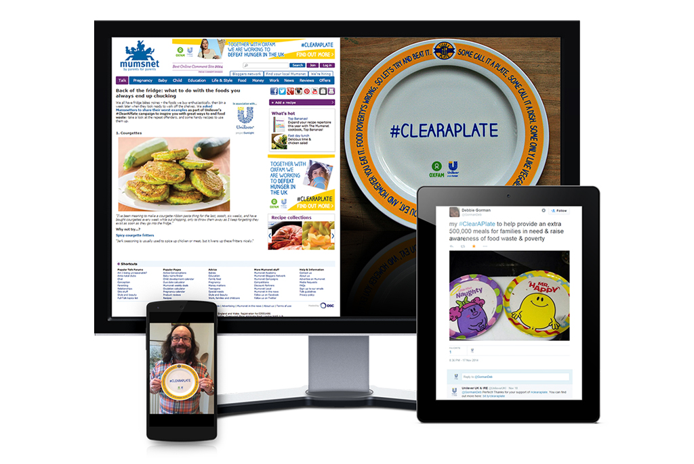
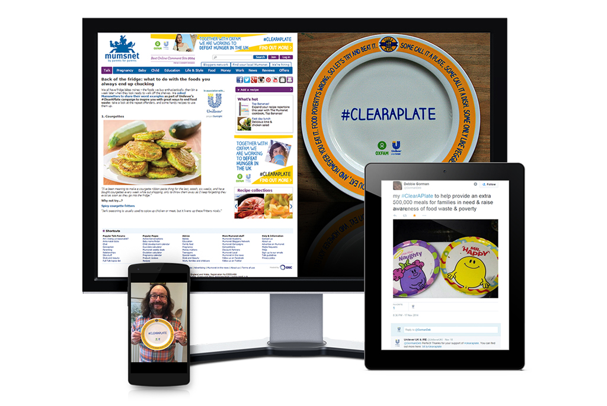

Unilever: #ClearAPlate
CSR social campaign to drive awareness of food hunger and food waste
Brief
Help raise awareness of food poverty in the UK and inspire people to take action.
Challange
Every day, UK households throw away 11,500 tonnes of edible food whilst one in five British families are living in poverty. Against the backdrop of other global humanitarian crises, I needed to create a campaign which brought the issue of hunger home to Britain in a simple way.
Approach
I thought about a way to easily get people to show their support for the cause without asking them to do too much. At the time there was (and to some degree still is) a big food photography craze across social, where people were taking beautiful images of plates of food and sharing them. I wanted to tap into this trend and flip it on its head. For every plate you finish, share a photo using the hashtag and Unilever will donate one full plate of food to Oxfam's food banks. This simple idea allowed people to get involved, whilst making them mindful of portion control and food hunger.
Results
Social impressions exceeded 77,600,000, and with a 567,057,160 earned media reach. The campaign was supported by influencers including Jamie Oliver, the Hairy Bikers, Sara Cox, Eamon Holmes, Thomasina Miers, Fay Ripley, Mumsnet and LoveFood, along with Unilever CMCO, Keith Weed. It received coverage in top-tier media including The Daily Mail, BBC Radio 5, Sky News and Channel 4.

 
